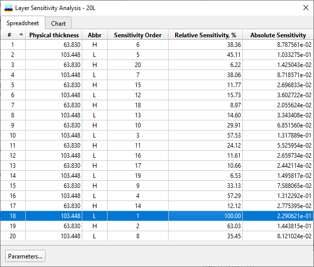
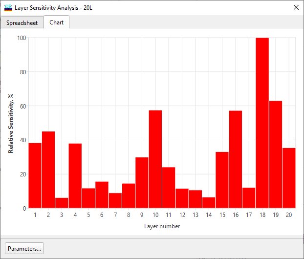

Layer Sensitivity Evaluation
Layer Sensitivity Evaluation
Navigation: OptiLayer Menu Commands > Analysis Menu > Layer Sensitivity >
Layer Sensitivity Evaluation
` <layer_sensitivity_setup.html>`__ ` <idh_menu_analysis.html>`__ ` <setting_systematic_deviations.html>`__
The Layer Sensitivity command is accessed in the Analysis menu.
This command allows the user to estimate the design sensitivity to layer thickness variations. The numbers displayed in the column labeled “Sensitivity order” are a rank order of the sensitivity of the merit function to small variations in each layer’s thickness. The layer ranked number 1 in the Sensitivity order is the layer that is most sensitive to change; it is assigned a relative sensitivity of 100%. The relative sensitivities of all other layers are calculated with respect to the sensitivity of the most sensitive layer.

Layer sensitivity values can also be represented in a graphical form. Use the Chart tab to switch the Layer Sensitivity window to this presentation.


Note that the Layer Sensitivity analysis can be performed in Stack mode. In this case, sensitivities of all layers of all coatings included in the Stack are analyzed and represented.